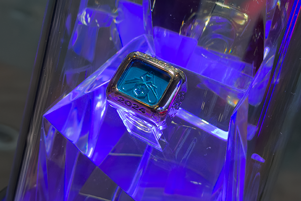

WORLDS 2024 League of Legends - London The O2 arena ▮▪
The finals took place in London, and fans had the chance to arrive early for the festival outside the arena. On-site, you could buy themed merchandise, try out the new ARAM mode, take photos with cosplayers, or admire the championship trophy and winner’s ring up close. The whole event was incredibly energetic as soon as you stepped out of the metro, you were immediately immersed in the WORLDS atmosphere. Everywhere you looked, you could see team banners, interviews with developers, and a flawless side program.
The big day is here. The finals between T1 and Bilibili Gaming are about to begin. The gates of the O2 Arena open, and fans fill their seats. On every chair awaited a small gift inflatable clappers and an LED wristband, which played a big role throughout the event. The wristbands lit up automatically in colors synchronized with the action in the arena, creating an incredible visual effect. Even during the musical performance, it was clear how powerful an impression this technology would leave.
The opening ceremony was unforgettable. I’ve experienced many major events E3 in Los Angeles, Gamescom, ESL tournaments, and even the Fortnite Championship in the U.S. but this? This was something extraordinary. The first performance by Ashnikko set the entire arena on fire. Her choreography was phenomenal. Still, I was most excited for the next two performances, which were an absolute 11/10 for me.
Mars Atlas and Tiffany Aris delivered an unforgettable show with their song Still Here. The vocals, the choreography, the energy, pure goosebumps. And then came the highlight
Linkin Park in their new lineup. The entire arena erupted as the WORLDS 2024 anthem began to play. Mike Shinoda then introduced both teams as they entered the arena one by one. Last to arrive was Faker, whose entrance sent chills through the entire crowd.

I’ve read countless reviews of the opening ceremony, and many call it one of the best in history. I can only agree it was absolute perfection.
Once the ceremony ended, it was time for the matches themselves. Many expected T1 to easily defeat Bilibili Gaming, but reality was different. T1 lost the first map, immediately raising the tension in the arena. No one anticipated all five maps, yet that’s exactly what happened. T1 won the decisive map, and Faker with his team became the 2024 champions. Their journey to WORLDS was tough, but they proved why they are one of the greatest teams in history. Their ability to learn from their mistakes is incredible.
The entire event can be summed up in one word — unforgettable. If you want to experience at least a glimpse of this atmosphere, I highly recommend watching the opening ceremony recording on the League of Legends YouTube channel. You’ll see just how epic this experience was.
See you next time…
Štefan
◀ Back to blog